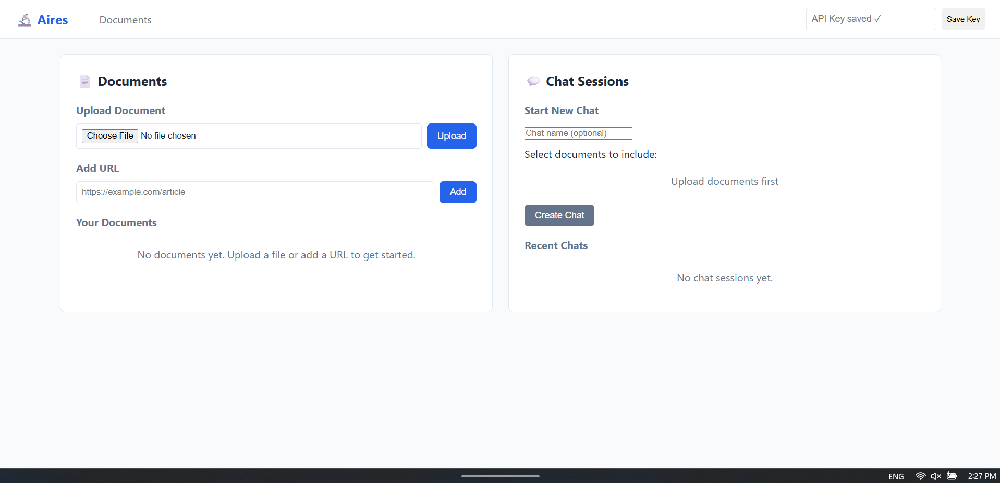
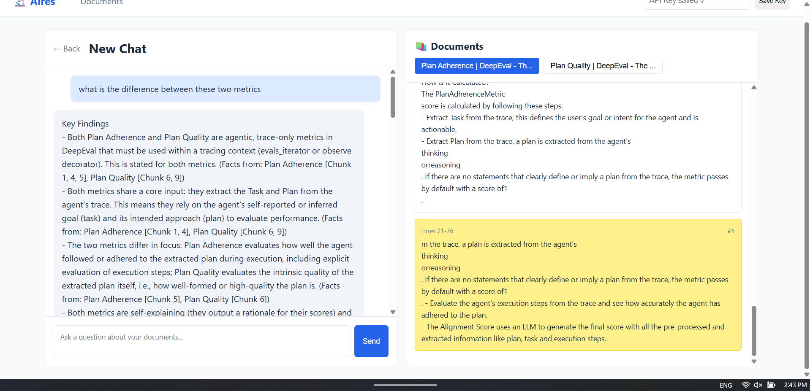

Project Overview
A custom-built AI chatbot interface designed to do research about a given document or set of documents. It also supports website links. The main features of this project include document question answering and verification of answers from the AI assistant by displaying the relevant data used to generate the answer. The application is optimized document question answering using Retrieval Augmented Generation (RAG) techniques and AI agents to handle complex queries.
NOTE: I am doing this project alone, it is still a proof of concept and i have yet to implement all the features. It is possible that I continue to develop this project. See the future development section for more details.


As seen in the image above, you can verify the information by looking at the relevant sections highlighted from the provided documents. This feature enhances transparency and trust in the AI's responses, allowing users to see the source of the information and study the section in the document where the answer was derived from.